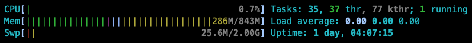
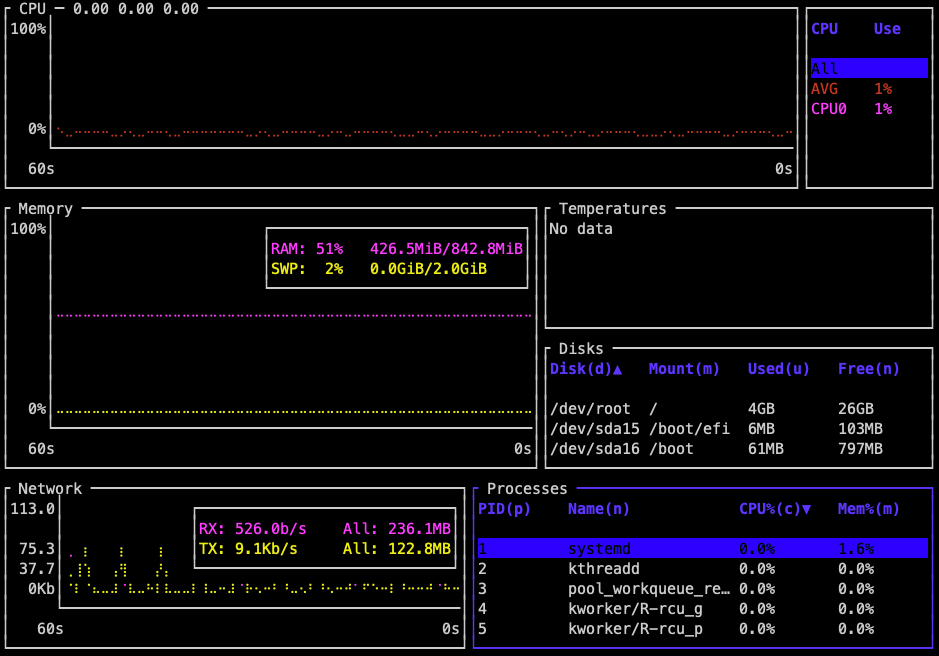

Exit with q (quit) or Ctrl-C.
System Administation Cheatsheet
This cheatsheet is designed to help students in this course quickly find and remember key sysadmin commands and concepts. Use it as a handy reference to make your work with servers and system administration tasks easier.
On this page
Table of contents
The basics
A few basic and/or essential commands.
How do I connect to my server with SSH? (ssh)
Connect to the server at the IP address W.X.Y.Z as the jde user:
$> ssh jde@W.X.Y.Z
Connect to the server at the domain example.com as the jde user:
$> ssh jde@example.com
Who am I? (whoami & id)
If you don’t remember who you are currently logged in (and have forgotten that this information is generally displayed at the very start of your prompt), you can use the whoami command:
$> whoami
jde
You can also use the id command which also shows the GID (group ID) of your user’s main group, and also the other groups your user may belong to:
$> id
uid=1000(jde) gid=1000(jde) groups=1000(jde),4(adm),24(cdrom),27(sudo),30(dip),105(lxd)
How do I change my password? (passwd)
$> passwd
What’s happening?
These commands allow you to see (and control) what is happening on your server.
Where’s all my CPU and/or memory gone? (htop or btm)
Run htop to see an interactive summary of the state of your server:

Install bottom and run btm for a more complete and modern alternative:

Exit with q (quit) or Ctrl-C.
What’s running? (ps or procs)
Run ps (process status) to list running interactive processes that belong to your user:
$> ps
PID TTY TIME CMD
9909 pts/1 00:00:00 bash
9936 pts/1 00:00:00 ps
Add the -f (full format) option for more information on these processes:
$> ps -f
UID PID PPID C STIME TTY TIME CMD
soy 9909 9908 0 23:40 pts/1 00:00:00 -bash
soy 9937 9909 0 23:44 pts/1 00:00:00 ps -f
Add the -e (every) option to include every process, not just yours:
$> ps -ef
UID PID PPID C STIME TTY TIME CMD
root 1 0 0 Oct06 ? 00:00:04 /sbin/init
root 2 0 0 Oct06 ? 00:00:00 [kthreadd]
root 3 2 0 Oct06 ? 00:00:00 [pool_workqueue_release]
root 4 2 0 Oct06 ? 00:00:00 [kworker/R-rcu_g]
root 5 2 0 Oct06 ? 00:00:00 [kworker/R-rcu_p]
Add the --forest option to see the hierarchical relationship between parent processes and their children.
Pipe this through grep to find specific processes:
$> ps -ef | grep ssh
root 1074 1 0 Oct06 ? 00:00:00 sshd: /usr/sbin/sshd -D [listener] 0 of 10-100 startups
root 8852 1074 0 22:27 ? 00:00:00 sshd: soy [priv]
soy 8985 8852 0 22:27 ? 00:00:00 sshd: soy@pts/0
root 9791 1074 0 23:40 ? 00:00:00 sshd: soy [priv]
soy 9908 9791 0 23:40 ? 00:00:00 sshd: soy@pts/1
Install procs if you want a modern alternative to ps. Running procs is equivalent to ps -ef but it is also interactive:
PID:▲ User │ TTY CPU MEM CPU Time │ Command
│ [%] [%] │
1 root │ 0.0 1.6 00:00:04 │ systemd
2 root │ 0.0 0.0 00:00:00 │ kthreadd
3 root │ 0.0 0.0 00:00:00 │ pool_workqueue_release
4 root │ 0.0 0.0 00:00:00 │ kworker/R-rcu_g
5 root │ 0.0 0.0 00:00:00 │ kworker/R-rcu_p
Exit with q (quit).
Running procs --tree is equivalent to running ps -ef --forest but it is also interactive:
$> procs --tree
PID User │ TTY CPU MEM CPU Time │ Command
│ [%] [%] │
├┬───────── 1 root │ 0.0 1.6 00:00:04 │ systemd
│├───────── 129 root │ 0.0 2.1 00:00:01 │ systemd-journal
│├┬──────── 195 root │ 0.0 3.2 00:00:07 │ multipathd
││├──────── [201] root │ 0.0 3.2 00:00:00 │ multipathd
││├──────── [203] root │ 0.0 3.2 00:00:00 │ multipathd
How much disk space is left? (df or duf)
List storage devices, mounts and available space with df (disk free):
$> df -h
Filesystem Size Used Avail Use% Mounted on
/dev/root 29G 3.8G 25G 14% /
tmpfs 422M 0 422M 0% /dev/shm
tmpfs 169M 1.7M 167M 1% /run
tmpfs 5.0M 0 5.0M 0% /run/lock
efivarfs 128K 35K 89K 29% /sys/firmware/efi/efivars
/dev/sda16 881M 59M 761M 8% /boot
/dev/sda15 105M 6.1M 99M 6% /boot/efi
/dev/sdb1 3.9G 28K 3.7G 1% /mnt
tmpfs 85M 12K 85M 1% /run/user/1000
You can also install duf if you want a modern alternative to the df command:
$> duf
╭──────────────────────────────────────────────────────────────────────────────────────────╮
│ 4 local devices │
├────────────┬────────┬───────┬────────┬───────────────────────────────┬──────┬────────────┤
│ MOUNTED ON │ SIZE │ USED │ AVAIL │ USE% │ TYPE │ FILESYSTEM │
├────────────┼────────┼───────┼────────┼───────────────────────────────┼──────┼────────────┤
│ / │ 28.0G │ 3.8G │ 24.2G │ [##..................] 13.5% │ ext4 │ /dev/root │
│ /boot │ 880.4M │ 58.5M │ 760.2M │ [#...................] 6.6% │ ext4 │ /dev/sda16 │
│ /boot/efi │ 104.3M │ 6.1M │ 98.2M │ [#...................] 5.8% │ vfat │ /dev/sda15 │
│ /mnt │ 3.9G │ 28.0K │ 3.6G │ [....................] 0.0% │ ext4 │ /dev/sdb1 │
╰────────────┴────────┴───────┴────────┴───────────────────────────────┴──────┴────────────╯
╭─────────────────────────────────────────────────────────────────────────────────────────────────────────────╮
│ 7 special devices │
├───────────────────────────┬────────┬───────┬────────┬───────────────────────────────┬──────────┬────────────┤
│ MOUNTED ON │ SIZE │ USED │ AVAIL │ USE% │ TYPE │ FILESYSTEM │
├───────────────────────────┼────────┼───────┼────────┼───────────────────────────────┼──────────┼────────────┤
│ /dev │ 418.7M │ 0B │ 418.7M │ │ devtmpfs │ devtmpfs │
│ /dev/shm │ 421.4M │ 0B │ 421.4M │ │ tmpfs │ tmpfs │
│ /run │ 168.6M │ 1.6M │ 166.9M │ [....................] 1.0% │ tmpfs │ tmpfs │
│ /run/lock │ 5.0M │ 0B │ 5.0M │ │ tmpfs │ tmpfs │
│ /run/snapd/ns │ 168.6M │ 1.6M │ 166.9M │ [....................] 1.0% │ tmpfs │ tmpfs │
│ /run/user/1000 │ 84.3M │ 12.0K │ 84.3M │ [....................] 0.0% │ tmpfs │ tmpfs │
│ /sys/firmware/efi/efivars │ 128.0K │ 34.4K │ 88.6K │ [#####...............] 26.9% │ efivarfs │ efivarfs │
╰───────────────────────────┴────────┴───────┴────────┴───────────────────────────────┴──────────┴────────────╯
Administration
You must be an administrator (have sudo access) to perform the following operations.
How do I change my username? (usermod)
The following command renames the oldname user account into newname and also renames the user’s home directory at the same time:
$> sudo usermod --login newname --home /home/newname --move-home oldname
You also have to rename the associated group:
$> sudo groupmod --new-name newname oldname
How do I create another user? (useradd)
$> useradd --create-home --shell /bin/bash jane_doe
How do I find and kill a naughty process? (ps, kill)
You might need this if you lost your SSH connection after you launched a process which listens on a port, e.g. 3000. If the process still runs, the port is no longer available. This could happen, for example, in the “Deploy a PHP application with SFTP” exercise.
Find the process with ps and grep:
$> ps -ef | grep php
root 20942 1 0 Dec06 ? 00:00:24 php-fpm: master process (/etc/php/7.2/fpm/php-fpm.conf)
www-data 20960 20942 0 Dec06 ? 00:00:00 php-fpm: pool www
www-data 20961 20942 0 Dec06 ? 00:00:00 php-fpm: pool www
jde 26378 26365 0 10:02 pts/0 00:00:00 php -S 0.0.0.0:3000
In this example based on the “Deploy a PHP application with SFTP”exercise, the process that interests you is the fourth one, which was launched by the php -S 0.0.0.0:3000 command as shown in the last column, and has the Process ID 26378. The other PHP processes are unrelated to what you were doing, so you should not touch them.
Now that you have the ID of the naughty process, you can kill it:
$> kill 26378
If you check the list of processes again, it should no longer be there. If it does not want to die, you can kill it more violently:
$> kill -KILL 26378
The changes to my systemd service are not taken into account! (systemctl daemon-reload)
Every time you change a systemd unit file, you must tell systemd to reload its configuration with the following command:
sudo systemctl daemon-reload
You should also restart your service. Assuming it is defined by the file /etc/systemd/system/foo.service, you can do so with the following command:
sudo systemctl restart foo
My systemd service is not working! (systemctl status & journalctl)
Assuming your service is defined by the file /etc/systemd/system/foo.service, you should first check its status with the following command:
sudo systemctl status foo
This shows you whether your service is active (running) and whether it is enabled (to restart at boot). When there is a problem, it may also show you the error that caused the service to fail to start.
If you cannot find a clear problem from the status information, you should look at the system logs for that service:
sudo journalctl -u foo
Not all services log there, however. If journalctl displays no log entries, you should look in the standard Linux log directory /var/log for a file or a directory named after your service. For example, nginx stores its error logs in
/var/log/nginx/error.log by default.
If your service cannot start, you should be able to find an error from one of these sources.
List a server’s SSH host key fingerprints
If you need to see the fingerprints of a server’s SSH public keys (e.g. to check the key in an SSH client’s initial connection warning), run the following command on the server:
find /etc/ssh -name "*.pub" -exec ssh-keygen -l -f {} \;
Installing & upgrading
You must be an administrator (have sudo access) to perform some of the following operations.
How do I know what is installed? (apt list)
List all installed packages:
$> apt list --installed
Listing...
accountsservice/bionic,now 0.6.45-1ubuntu1 amd64 [installed]
acl/bionic,now 2.2.52-3build1 amd64 [installed]
acpid/bionic,now 1:2.0.28-1ubuntu1 amd64 [installed]
...
Find something more specific by piping through grep:
$> apt list --installed | grep ssh
libssh-4/noble,now 0.10.6-2build2 amd64 [installed,automatic]
openssh-client/noble-updates,now 1:9.6p1-3ubuntu13.5 amd64 [installed,automatic]
openssh-server/noble-updates,now 1:9.6p1-3ubuntu13.5 amd64 [installed]
openssh-sftp-server/noble-updates,now 1:9.6p1-3ubuntu13.5 amd64 [installed]
ssh-import-id/noble,now 5.11-0ubuntu2 all [installed]
How do I find new stuff to install? (apt search, apt info, apt show)
Search for packages by name:
$> apt search tldr
Sorting... Done
Full Text Search... Done
...
tealdeer/noble 1.6.1-4build2 amd64
simplified, example based and community-driven man pages
Find out more about a package with apt info or apt show (equivalent):
$> apt info tealdeer
Package: tealdeer
Version: 1.6.1-4build2
...
Installed-Size: 3,124 kB
Depends: libc6 (>= 2.34), libgcc-s1 (>= 4.2), libssl3t64 (>= 3.0.0)
Homepage: https://github.com/dbrgn/tealdeer/
...
Description: simplified, example based and community-driven man pages
tealdeer is a very fast CLI implementation of tldr, the collaborative
cheatsheets of console commands.
.
The executable is named tldr.
How do I install stuff? (apt install)
Install a new package:
$> sudo apt install cowsay
Reading package lists... Done
Building dependency tree
Reading state information... Done
The following NEW packages will be installed:
cowsay
0 upgraded, 1 newly installed, 0 to remove and 4 not upgraded.
Need to get 17.7 kB of archives.
After this operation, 89.1 kB of additional disk space will be used.
More complex packages will list their dependencies and ask you to confirm that you really want to install everything.
If the package provides a command, you can then use it to make sure your installation worked. In this example, the (very useful) cowsay command was installed:
$> cowsay hello
_______
< hello >
-------
\ ^__^
\ (oo)\_______
(__)\ )\/\
||----w |
|| ||
How do I keep my server up-to-date? (apt update, apt upgrade & apt full-upgrade)
You might have noticed that the list and show commands are quite fast. That’s because they don’t fetch any data from the network: the package lists and package information are stored locally on the computer.
Of course, this local information becomes out of date as new package versions are released to the official package repositories. You can update your local information with apt update (which requires superuser privileges):
$> sudo apt update
Hit:1 http://azure.archive.ubuntu.com/ubuntu noble InRelease
Get:2 http://azure.archive.ubuntu.com/ubuntu noble-updates InRelease [126 kB]
Hit:3 http://azure.archive.ubuntu.com/ubuntu noble-backports InRelease
Get:4 http://azure.archive.ubuntu.com/ubuntu noble-security InRelease [126 kB]
Get:5 http://azure.archive.ubuntu.com/ubuntu noble-updates/main amd64 Packages [538 kB]
Get:6 http://azure.archive.ubuntu.com/ubuntu noble-updates/main Translation-en [132 kB]
Get:7 http://azure.archive.ubuntu.com/ubuntu noble-security/main amd64 Packages [382 kB]
Get:8 http://azure.archive.ubuntu.com/ubuntu noble-security/main Translation-en [84.0 kB]
Fetched 1,388 kB in 1s (1,855 kB/s)
Reading package lists... Done
Building dependency tree... Done
Reading state information... Done
2 packages can be upgraded. Run 'apt list --upgradable' to see them.
You now have up-to-date information about all available packages. You can list available upgrades with the apt list command:
$> apt list --upgradable
Listing... Done
cloud-init/noble-updates 24.3.1-0ubuntu0~24.04.2 all [upgradable from: 24.2-0ubuntu1~24.04.2]
mdadm/noble-updates 4.3-1ubuntu2.1 amd64 [upgradable from: 4.3-1ubuntu2]
When you have packages to upgrade, you could of course manually apt install each of them, but there are also two helpful commands that can do it for you:
-
apt upgradeThis command will upgrade all packages that have ne versions, installing any new dependencies that may be required.
However, it will behave conservatively and never remove packages that are currently installed. This is to avoid problems in case new versions of your installed packages have widely different dependencies.
-
apt full-upgradeThis command will do the same as
apt upgrade, but in addition, it will automatically remove any packages that were dependencies of previous versions of your packages but are no longer needed by the new versions.
The second command is “more dangerous” as you have to make sure that none of the removed packages will impact your computer. Use it with caution.
A word of caution: do not install or upgrade packages without at least a basic understanding of what they do and how they might be used by your operating system and applications. Otherwise you risk breaking your system.
Daemons using outdated libraries
When you install or upgrade a package, it may prompt you to reboot and/or to restart outdated daemons (i.e. background services):

Simply select “Ok” by pressing the Tab key, then press Enter to confirm.
This happens either because you have installed a new background service, or because your Linux distribution uses unattended upgrades: a tool that automatically installs daily security upgrades on your server without human intervention. Sometimes, some of the background services running on your server need to be restarted for upgrades to be applied. Rebooting your server would also have the effect of restarting these services and applying the security upgrades.
System restart required
Some packages can be upgraded in place. Other packages may require the computer to be restarted for the upgrade to take effect.
When that is the case, there will be a warning on the shell every time you connect:
$> ssh jde@archidep.ch
Welcome to Ubuntu
...
**** System restart required ***
This means that the upgrade process will only be complete once you restart the
computer with sudo reboot.
How do I get rid of stuff? (apt remove & apt autoremove)
Uninstall a package:
$> sudo apt remove cowsay
Reading package lists... Done
Building dependency tree... Done
Reading state information... Done
The following packages will be REMOVED:
cowsay
0 upgraded, 0 newly installed, 1 to remove and 2 not upgraded.
After this operation, 93.2 kB disk space will be freed.
Do you want to continue? [Y/n] y
(Reading database ... 64682 files and directories currently installed.)
Removing cowsay (3.03+dfsg2-8) ...
Processing triggers for man-db (2.12.0-4build2) ...
This command will uninstall binaries but not configuration files. Use apt purge <name>... to also remove the configuration files.
The apt autoremove command cleans up packages that were previously required but are no longer useful. Most of the time, there will probably be nothing to
remove:
$> sudo apt autoremove
Reading package lists... Done
Building dependency tree... Done
Reading state information... Done
0 upgraded, 0 newly installed, 0 to remove and 2 not upgraded.
It’s good practice to run apt autoremove after an upgrade and reboot, to make sure there are no unused packages taking up space on the computer.
What about apt-get and apt-cache?
The apt command is actually a higher-level frontend to the older and lower-level apt-get and apt-cache commands. apt is simpler to use, but you will find many examples of these older commands on the Internet.
These are mostly equivalent commands:
apt command |
older equivalent |
|---|---|
apt list |
dpkg -l |
apt search |
apt-cache search |
apt install |
apt-get install |
apt update |
apt-get update |
apt upgrade |
apt-get upgrade |
apt full-upgrade |
apt-get dist-upgrade |
My post-receive Git hook is not executing!
When you push to a remote (foo in this example), you may get this message:
$> git push foo main
Everything up-to-date
This means that you have no new commits to push. Therefore the post-receive hook is not triggered since nothing new was received by the repository on the server.
You need to make and commit a change before you push, so that new commits will be sent.
If you have no changes to make and just want to test your hook, you may also create an empty commit with the following command:
git commit --allow-empty -m "Test hook"
This will give you a new commit to push without actually making a change.